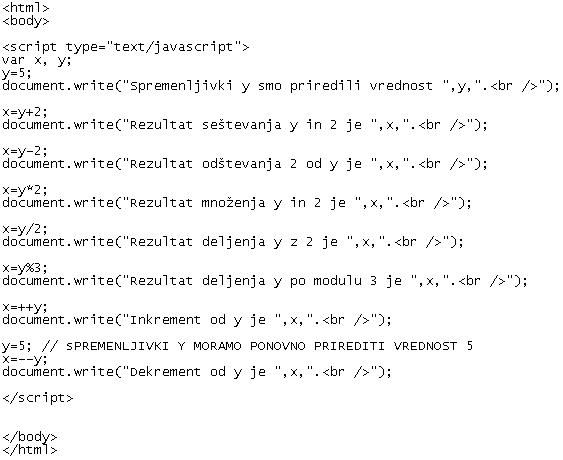
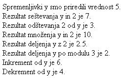

Vsakdo ve, koliko ovac in koz ima, a le malokdo ve, koliko ima prijateljev. (Sokrat)
  Slika 1 in 2: Uporaba aritmetiènih operatorjev - koda in videz spletne strani 1. Izdelaj spletno stran, ki bo izgledala tako, kot kažeta sliki 1 in 2. Datoteko poimenuj "10apriimek.html". Ne pozabi na konènico ".html". POZOR: Najprej NATANÈNO izdelaj vajo v tej uèni enoti in jo pokaži profesorju, nato zapiši odgovore na spodnja vprašanja. 2. V kodo primera v tej uèni enoti vstavi spodaj navedene komentarje na ustrezna mesta, ki jih ti komentarji pojasnjujejo. //Izraèun vrednosti spremenljivke "x" s pomoèjo deljenja. //Prireditev vrednosti spremenljivki "y". //Izraèun vrednosti spremenljivke "x" s pomoèjo množenja. //Napoved ali deklaracija dveh spremenljivk. //Izraèun vrednosti spremenljivke "x" s pomoèjo dekrementa. 3. Kodo primera v tej uèni enoti spremeni tako, da bo deklarirana še tretja spremenljivka "z". Spremenljivki "z" nato priredi vrednost 10. 1. Vprašanja za usmerjanje pozornosti in usvajanje novih besed: 1. Katere so štiri osnovne raèunske operacije? 2. Katera osnovna raèunska operacija je opisana v tabeli kot prva? Zapiši enaèbo z vrednostmi x in y (v številkah). 3. Katera osnovna raèunska operacija je opisana v tabeli kot druga? Zapiši enaèbo z vrednostmi x in y (v številkah). 4. Katera osnovna raèunska operacija je opisana v tabeli kot tretja? Zapiši enaèbo z vrednostmi x in y (v številkah). 5. Katera osnovna raèunska operacija je opisana v tabeli kot èetrta? Zapiši enaèbo z vrednostmi x in y (v številkah). 2. Zapiši od ene do pet kljuènih besed, ki povzemajo vsebino te uène enote. 3. Vprašanja za razmislek in povezovanje z lastno izkušnjo: 1. Kolikokrat smo v primeru v tej uèni enoti spremenljivki y priredili vrednost? 2. Zakaj smo morali spremenljivki y na koncu kode še enkrat prirediti vrednost? 3. Koliko znaša vrednost, ki smo jo priredili spremenljivki y? 4. Koliko znaša modul deljenja v primeru te uène enote? 5. Koliko bi znašal inkrement števila 11? 6. Koliko bi znašal dekrement števila 11? 7. Koliko znaša rezultat deljenja števila 11 po modulu 4? 4. Domaèa naloga: 1. V zvezek prepiši misel, ki je zapisana na zaèetku uène enote z rdeèimi èrkami. Zabeleži nekaj lastnih misli, ki se ti utrnejo ob razmišljanju o njej. 2. Odgovori na vprašanja, na katere nisi uspel/a odgovoriti v šoli. 5. DODATNO DELO: 1. Izdelaj spletno stran, ki bo izgledala tako, kot kažeta sliki 1 in 2. HTML datoteko poimenuj "10bpriimek.html". V kodi spremeni le vrednost spremenljivke y, ki naj bo 10, modul pa naj bo 4. |